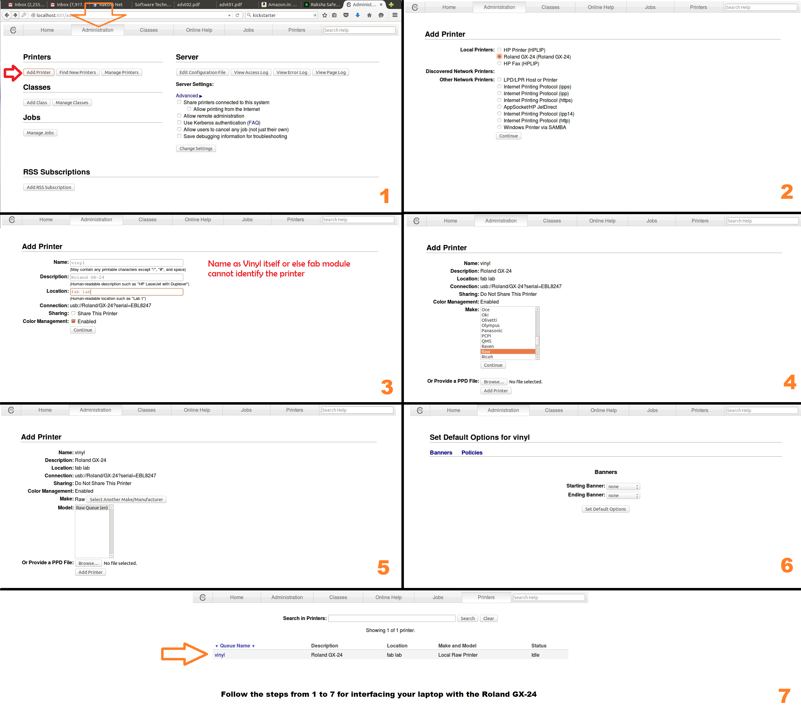

Week 2
Getting acquainted with the Machines
Week 2: Getting acquainted with the Machines
And from today onwards everything is on Ubuntu!!!
Day 5: The Vinyl Cutter
The Vinyl Cutter that our fablab has is Roland GX-24 , CAMM-1 SERVO vinyl cutter 2" - 27.5"5.08cm - 69.85cm 20 IPS 30gf - 250gf.
A vinyl cutter is a type of computer controlled machine. Small vinyl cutters look like computer printers. The computer controls the movement of a sharp blade. This blade is used to cut out shapes and letters from sheets of thin self-adhesive plastic (vinyl). A symbol / label can be produced using a Vinyl Cutter such as a ‘Sticker Machine’ or a ‘Craftrobo’. These machines are controlled by a computer and operate similar to a printer. Essentially they cut out shapes in adhesive vinyl. The vinyl can then be stuck onto almost any surface.
Today’s Assignment: Create a sticker using the vinyl cutter.
Francisco started today’s class by giving an introduction to vinyl cutting. The first step was to connect my laptop with the printer. Fab academy do not recommend using drivers for printing instead use fab modules. So for connecting the printer with my PC log on to http://localhost:631 . This led me to a website named CUPS (C UNIX Printing Systems).

Franc then gave us a detailed instruction the machining part.
He unloaded the lever behind the printer and inserted the vinyl sheet. The sheet while loading should be aligned to grooves. The sheet when placed on the machine has to be between any two white markings seen in the front. Load the cutting blade to the printer. The printer has an instrument cluster as shown.
Select the type of vinyl used for printing whether it is a sheet, piece or roll. to the machine and The keys are used for navigating the cutting head . Using the navigation button move the head towards the point from where the cut has to begin. He moved it accordingly and pressed the origin button. Now the machine considers this as the origin. Now he pressed the test button. This performed a test cut in the vinyl. A square within a circle. The objective of this test is that the user should be able to peel of the circle without removing the square. This ensures that the blades are sharp enough and the applied pen force is sufficient. Franc for demonstration gave a test cut. It did made the cut, but when tried to peel off the circle, the square also got peeled off.
| Sl No | Problem | Solution | Result |
|---|---|---|---|
| 1 | Test Cut Failure | Increased penforce | Test failed |
| 2 | Test Cut Failure | Increased blade length | Test failed |
| 3 | Test Cut Failure | Removed and cleaned the blade and holder | Test failed |
| 4 | Test Cut Failure | Replaced the blade | Test failed |
Here the blade before replacing was viewed under a microscope. Franc showed the blade having blunt edges that resulted in undistributed cut in the vinyl.
Advice: Always try to figure out the problem that led to the error.
So now its time to cut my design. So the design I am having is an ambigram. One thing you need to keep in mind is that the design should have minimum 500 dpi ie when converted to pixels it should be more than 2000 * 2000 pixels and should be in black and white. The reason being that only then the vinyl recognizes the borders/boundaries correctly.
The Cut process
The Stickering process
So once everyone tried out their designs and after that Franc explained the concept of rapid prototyping by showing making of his new project Talking Bits (Link to talking bits). Rapid prototyping is a quality inherit to one who qualifies fab academy and that’s what makes him/her distinct from others. Time management is the major concern here.
Day 6: Laser cutting
The laser cutter that we have in our fablab is the Trotec Speedy 100 (CO2 laser)one of the costliest and fastest machine in fablab. The purpose of the machine is mainly for cutting and engraving. Most common materials used are Soft wood, Acrylic and metal. Franc strictly recommended to make sure the material used is friendly to the machine and if you don’t know about the material then better you don’t use it. The laser machine comes along with a separate filter for filtering of the fumes generated while cutting. Always switch on the filter.
The ultimate aim is to deliver something whether it is working or not doesn’t matter and also insisted to not to leave the Laser unattended while it is working. The machine emits powerful beam which is precisely focused which burns the material and hence creating the cut and engraving. There are different classes of Laser and the one used here is the Class 4.So make sure the lid is never opened in between the cut. The lid absorbs all the radiation emitting from the machine. Always focus the laser before every single work. While I design for the laser I have to make sure that every lines are closed and there are no double lines. Double lines increase the possibility of material catching fire.
Laser frequency = Number of laser shots per second. After giving an introduction to the machine Franc showed us to focus the laser and asked us to try out designs of our own. Similar to the vinyl the Speedy 100 also have navigation buttons. This moves the laser head to and fro and sideways. The maximum dimension of the laser cut material that can be placed inside the machine is 30*60 cm. So my aim is to design a jigsaw puzzle using the laser so that it involves both cut and engraving. Software used here is inkscape. I identified a picture of Steve Jobs (Founder Apple Inc) with his quote. Now I need to draw jigsaw drawings. As it is a bit complicated I searched for any tool for the same in google. This gave me with a plugin to inkscape for Jigsaw laser engraving. Using the tool I was able to get the design as shown.
Day 7: 3D Printing
3d Printing:
The 3D Printer that our fablab is having is Ultimaker 2 and Dimensions 1200est. The ulitmaker 2 is the standard 3D printer and whereas Dimensions is an industrial 3D printer, which gives you more quality and solid prints. For prototyping purpose Ultimaker 2 is best suggested. Read more about 3D Printing here.
For 3D printing the Francisco asked everyone to draw a design using Antimony. He showed us making few designs and asked to do some custom designing. My design is idea was to create 3 spheres which are at equal distance and to place another sphere on top of the three , like a pyramid. Designing in Antimony is never easy and it should be parametric. By seeing me struggling with the design Francisco gave me a helping hand and gave a clear idea on the concept. He always suggest you to design first on the paper and then to design using the computer. As shown below.
After designing I tried printing it. Before printing in the Ultimaker 2 always check whether the plates are aligned properly. Cura is a custom designed software for Ultimaker 2. After making your design open the .stl . After loading it I was able to see the exact figure of my design in the Ultimaker plate. It is a kind of simulator. Here I can see the different layers with which the print will be designed. If need you can also add support material for designing your print.
So I copied my design to the sd card with the help of Cura. Inserted it into Ultimaker and gave it to print. Tried again by adding the support material but the result was same. So thought of trying another design as shown.
Day 8: The wax milling using Roland Modela
Roland Modela is the machines that supports milling in copper and milling in wax. Apart from PCB milling Modela can be used for making wax mold. So today’s assignment is to create a mold out of wax. The software that I am using for designing is Antimony. With the concept of parametric design in mind I designed a square pyramid. As shown here. For Wax molding I need to use two types of bits for milling and for making fine cuts.
The x min and y min need to be noted. So that in case of any interuptions i can restart the job by giving the values of x and y